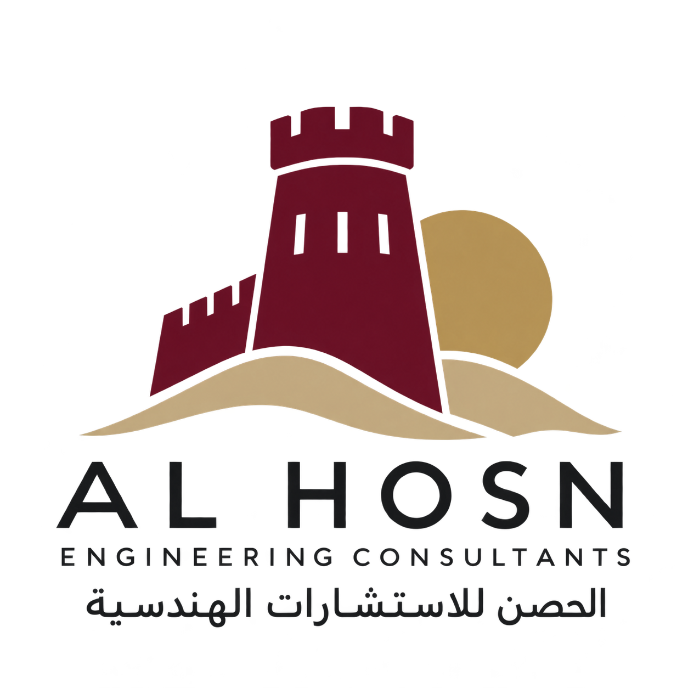

01
العمارة والتصميم
مساحات تصمّم للحياة.
تبدأ العمارة بفهم استخدام المكان. نحوّل الأفكار إلى تصاميم منسقة توازن بين الجمال والوظيفة والخصوصية وطبيعة الموقع.
- الدراسات المبدئية
- المخططات المعمارية
- رسومات العرض والتصور ثلاثي الأبعاد

الحصنللاستشارات الهندسيةطلب استشارةخبراتنا
من دراسة الموقع الأولى إلى الإشراف على التنفيذ، تربط خدماتنا بين مختلف جوانب مشروعك.
تبدأ العمارة بفهم استخدام المكان. نحوّل الأفكار إلى تصاميم منسقة توازن بين الجمال والوظيفة والخصوصية وطبيعة الموقع.
يجمع التصميم الإنشائي بين الرؤية المعمارية والمتطلبات الهندسية. نربط التحليل والتصميم والمخططات الإنشائية بعمل بقية تخصصات المشروع.
ندرس تصميم الأنظمة الميكانيكية والكهربائية والصحية بالتنسيق مع العمارة والإنشاء، للوصول إلى خدمات مبانٍ عملية ومتكاملة.
توفّر أعمال المسح الأولي ودراسات المشروع المعلومات اللازمة لاتخاذ القرارات التصميمية، بما يشمل مراجعة نتائج الأبحاث الميدانية وفحوص التربة.
من المواصفات وجداول المواد إلى وثائق المناقصات والإشراف الموقعي، ندعم التنسيق في مراحل التصميم والتنفيذ.
منهجنا في العمل
نفهم
متطلباتك وموقعك وطريقتك في السكن أو العمل. يبدأ كل مشروع مدروس بفهم واضح لما تريد تحقيقه.
نصمّم
نطوّر العمارة والإنشاء وخدمات المبنى بتنسيق متكامل، من الدراسات الأولية إلى المخططات التفصيلية.
نشرف
تدعم وثائق المناقصات والتنسيق والإشراف الموقعي تنفيذ المشروع وفق الرؤية التصميمية.
لنبدأ معاً